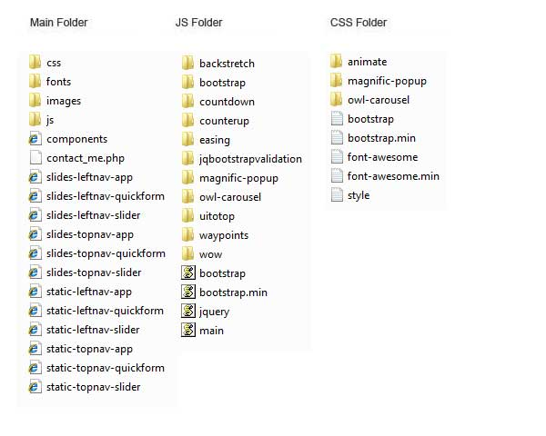
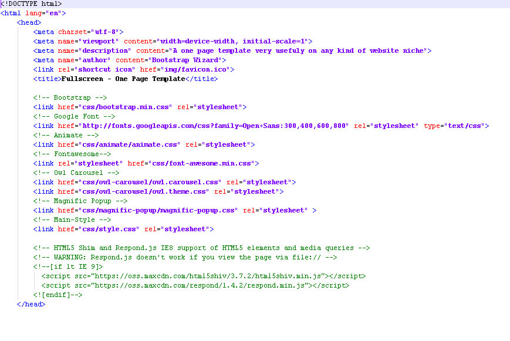
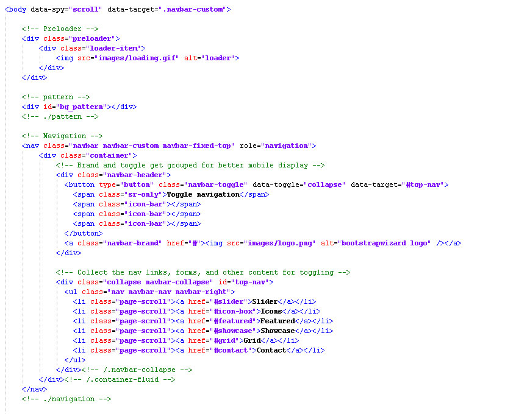
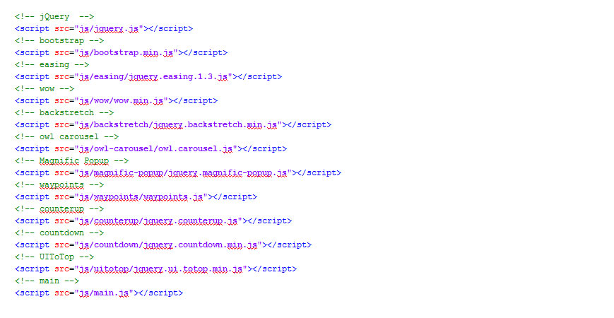
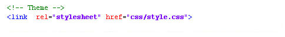
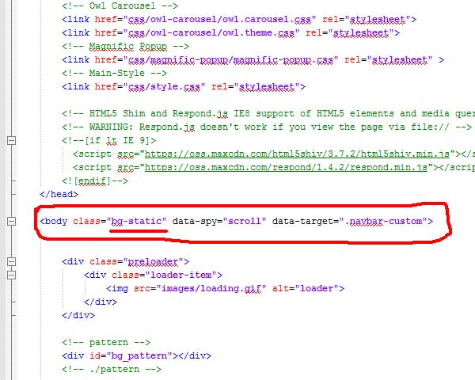
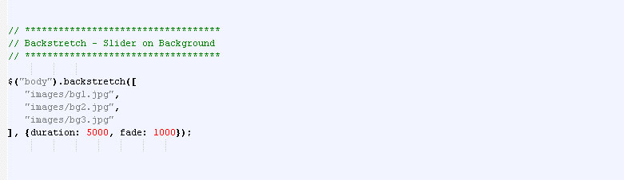
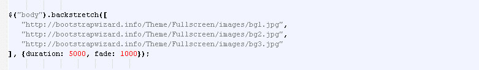
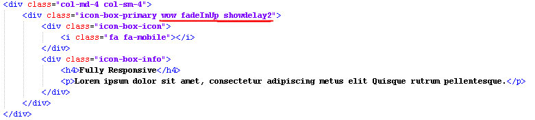

Table of Content
1. Overview2. Page Structure
3. Helpful Tips
4. Icon Usage
5. How to use style
6. How to replace Background Image and slider background
7. Animations
8. JavaScript & Css Sources
9. Sources & Credits
10. Support
Overview
Fullscreen Template is a responsive template based on Twitter Bootstrap Framework it can be used for any kind of website. It has very clean code and made with love. It is easy to customize and use. Some of its features are given below
Features
- New Multi Page Template & Comingsoon page ready to use
- 12 Variants
- Fading Background
- Responsive Design
- Bootstrap v3.3.1
- Easy to customize
- 24x7 support
- Well documented
- Work in all major browsers
Files Included
- Just Unzip the folder you get and you will find the stuff inside it, given in the screenshot below in the main template folder
- Fullscreen folder contains sub folders named css, img, js which contains stuff to power this template.
- You will see files/pages, these will be described below.
View of Unzipped Folder
(**New**)
homepage.html
about.html
services.html
portfolio.html
contact.html
coming-soon.html
Template Structure
static-topnav-slider.html
static-topnav-app.html
static-topnav-quickform.html
static-topnav-slider.html
static-topnav-app.html
static-topnav-quickform.html
slides-topnav-slider.html
slides-topnav-app.html
slides-topnav-quickform.html
slides-topnav-slider.html
slides-topnav-app.html
slides-topnav-quickform.html
components.html A collection of shortcodes.
Page Structure
Head : this section has css for every plugins

Navigation with Scroll Fucntion , Preloading and Pattern

End of Page : All JS files needed located in this section

Helpful Tips
Icon Usage
Fullscreen Theme uses an <i class="fa fa-home"></i> tag for all icons using Fontawesome see full usage here : Font-Awesome
Style
just use the default stylesheet <link rel="stylesheet" type="text/css" href="css/style.css">

Static Background & Slider
NOTE: you can use bg-static class if you want static background

When replacing the background image make sure to open the main.js

NOTE: make sure that replace the image path when it is on host

Animations
You can Animate specific section you want by just adding class="wow fadeInUp" and showdelay2 is equal to 0.2 milliseconds to show the div. see the full usage here: WOW

Javascript & Css
You can see some help info, when click links which are below each regarding script:
- jQuery http://jquery.com/
- bootstrap http://getbootstrap.com/
- easing http://gsgd.co.uk/sandbox/jquery/easing/
- owl carousel http://www.owlgraphic.com/owlcarousel/
- Magnific-Popup http://dimsemenov.com/plugins/magnific-popup/
- UItotop http://www.mattvarone.com/web-design/uitotop-jquery-plugin/
- wow http://mynameismatthieu.com/WOW/
- Animate.css http://daneden.github.io/animate.css/
- Font-awesome http://fortawesome.github.io/Font-Awesome/
- Countdown http://hilios.github.io/jQuery.countdown/
- CounterUp http://gambit.ph
- Waypoints http://imakewebthings.com/jquery-waypoints/
- jqBootstrapValidation http://ReactiveRaven.github.com/jqBootstrapValidation/
Sources & Credits
Many thanks to the owner of all images i used in the template preview.
- All photos - http://www.flickr.com/photos/astragony
- All photos - http://www.unsplash.com
- background polygons - http://blog.spoongraphics.co.uk/freebies/20-free-high-res-geometric-polygon-backgrounds
Thank You
Once again, thank you so much for purchasing this theme. I'd be glad to help you if you have any questions relating to this theme. I'll do my best to assist.
Just Email Me. bootstrapwizard@yahoo.com